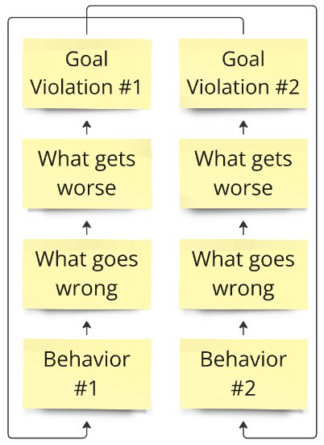

What is a druid loop?
~2 min read
Every druid loop has the same parts:
- Two clashing behaviours at the bottom (you can’t do both — not enough time or money).
- Cause-and-effect steps rising from each one.
- A “goal violation” at the top of each side = something bad enough to make you switch.
- Loop-back arrows — each bad result pushes you toward the opposite behaviour.

A druid is a mapping of a recurring dilemma. It lays out both sides and connects them with small cause-and-effect steps until the loop closes.
The core insight: a recurring problem is not a single bad decision — it’s a cycle. One approach creates a negative side effect, which pushes you toward the opposite approach, which creates its own negative, which pushes you back. If a simple fix existed, it would have been solved long ago.
That switching is costly on its own: progress stalls, people don’t know what to expect, and you start to look unpredictable.
Quick check — try before you peekWhat four parts does every druid loop contain?
Show the answer
Two clashing behaviours at the bottom, cause-and-effect steps rising from each, a “goal violation” at the top of each side, and loop-back arrows that push you toward the opposite behaviour.